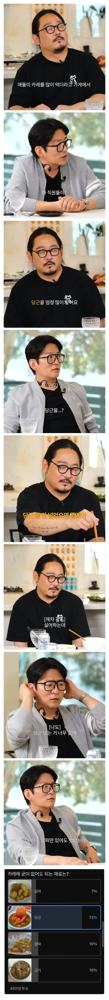

셰프들도 인정한 카레의 굳이 넣을필요 없는 재료
댓글
감자보다는 차라리 당근인데
당근향 개토나옴 진짜 왜넣는거임? 막상 향긋하다 이러는애들 당근향듬뿍나는 당근케익주면 안먹음
난 반대로 당근케익만 먹음ㅋㅋ
나도 익힌 당근은 개싫어하는데 당근 케잌은 먹음 ㅋㅋㅋ
닭도리탕이랑 카레에 당근 맛있는데
당근이 있어야 완성임 ㅅㄱ
난 미완성이좋아
한국식 카레 극혐이긴함
뭉근하게 끓이면 물렁물렁해져서 맛있는데 감자랑 큰차이도 안나고
카레의 당근은 꿀맛임
당근을 싫어하는거 아니냐 ㅋㅋㅋ
우린 당근 안낳음
이래서 출산율이...
당근, 애호박, 버섯 넣으면 극혐
고구마 넣으면 존맛인데
집에서 잡채빼곤 당근들어간 음식 없음
카레의 당근은 중요한 요소구만 왜 빼라그럼???
차라리 호박을 빼라고!
호박이 더 좋은데 먼소리야
고기야말로 진짜 필요없는것중 하나임
카레 아니면 당근 먹을 일 없어서 싫어해도 먹음
당근 넣으면 달아져서 싫어
고기 : 무조건 있어야지
양파 : 고기 있으면 같이 따라와야 됨.
감자 : 묽기 조절도 되고 맛도 좋음
당근 : 넌 생으로 먹을 때가 젤 맛있어
감자, 양파, 당근, 애호박, 양배추, 브로콜리, 토마토 정도 넣어본 듯
고기는 점점 없어도 되겠더라
고기 양파 고구마만 넣으면 허전함
고기 양파 카레 끗
당근 보리꼬리 넣는데
당근향 싫어
당근케이크나 생으로 씹어먹을때는 안 거슬리는데 유독 카레에 당근 들어가면 거슬리더라
색감하고 건강 생각해서 먹는거지 당근 쳐먹고싶어서 먹는사람이 몇이나될까ㅋㅋㅋ
당근좋은데
당근은 볶더라도 살짝만 볶아서 크리스피함을 살리면 먹을만한데 카레에 넣으면 그냥 물컹해져가지고
식감도 이상해지고 향도 어중간한 단맛?에 카레랑 별로 궁합이 안좋음
난 상관없음 어차피 흐물해져서
저 맛알못들
한식 카레는 양파랑 고기가 코어지 ㅇㅇ
감자 좆도 노쓸모
당근은 제일 중요한데
양파 당근이 카레에서 제일 중요한 재료임
당근이 싫을이유가 뭐가있지
카레가 유일하게 당근이 맛있는 요리 아닌가